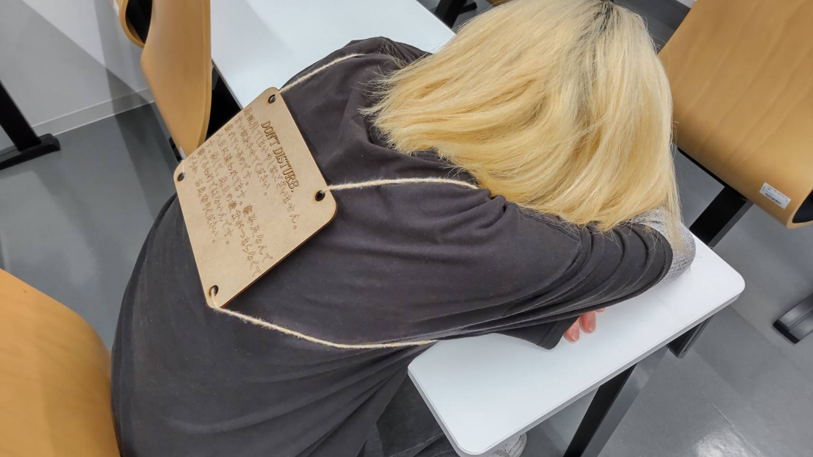
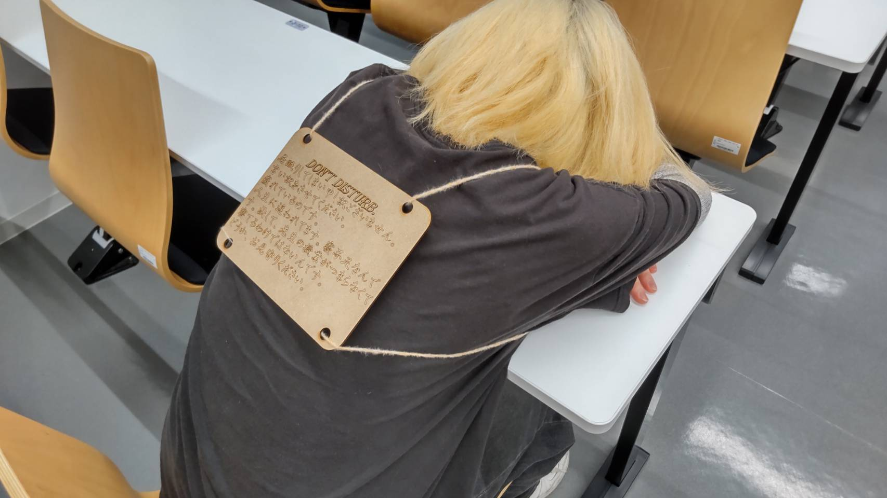
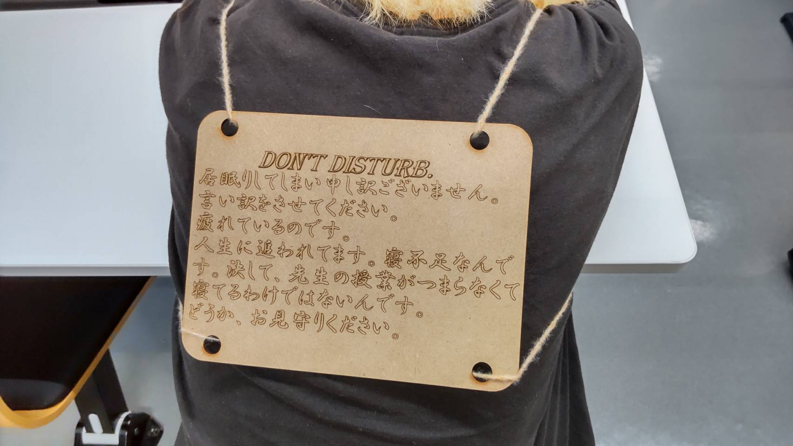

Desighn for others
自分が授業中に眠くなってしまい、授業中に寝てしまったことはみんな一度は経験したことがあると思います。今回の作品は、私が受けている授業の一つで
毎授業出席しているのにずっと寝ている人がおり、その人を見て思いついたものです。もし、居眠りをしてしまっている理由が本当に疲れてがたまってしまっている場合
それをうまいこと教授に伝えて、なるべく教授への印象を良いままにしておきたいだろうなと思って作りました。
 

このように背中にしょって、教授が起こしに来た時に理由が分かるようにします。
もしうまくいけば、大変便利ですが、書いてある内容は冗談が通じる人やネタじみたことが好きな教授にのみ通じる内容であるため、すべての授業で使うことは全くお勧めしません。